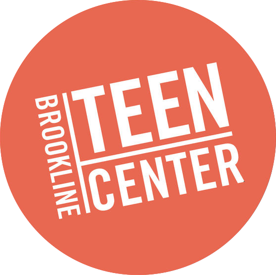
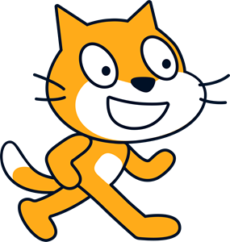
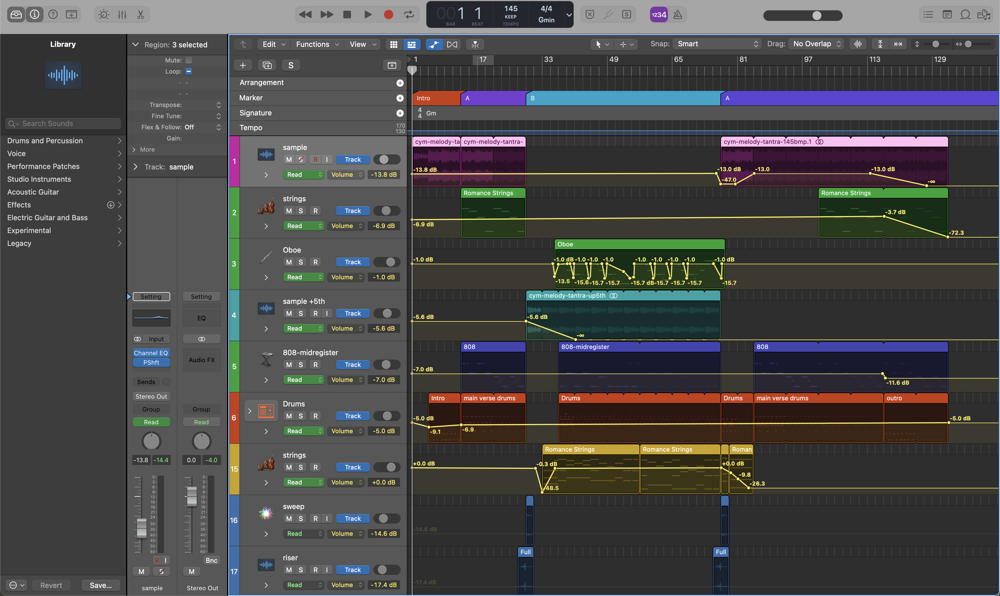

FA550
Ryan Christopher
melody and circuitry
how technology can help remove
the barrier of entry to music education
Arts
Music
Music
Code
Code
Arts
Where I Am
During this semester I have worked at the Brookline Teen Center. It is a nonprofit organization in Brookline that serves as an extracurricular hub for youth in the community.
My Work
Part of why I was brought onto the team at the Brookline Teen Center is my niche of music
and technology. I am a classically trained musician turned programmer who has a passion
for teaching. Throughout this semester I have run activities with 4th through 8th graders
showing them the basics of coding and music, as well as how they can be combined.
I was recently tasked with creating my own programming/activites where the youth can
learn about music through coding, and have put together three projects.
My Projects
Each one increases in recommended skill level, however being new to coding and/or music doesn't mean a student can't try them.
- building a piano with block based code
- mixing samples using python
- building/recording a song using a d.a.w.
#1 - Scratch Piano

Using code to create a musical instrument sounds daunting, but in reality it can be a great beginner project. Using scratch, a block based coding language, you can create a fully functioning piano that takes user input from the keyboard and outputs sound corresponding to the key pressed.
Why?
- introduces sequential instructions of code
- introduces note names and values
- can lead to keys and chord structures
- the software is free, only requirement is internet
- easy to understand UI makes it approachable
- low skill floor, extremely high skill ceiling
#2 - Sampling with Python
When teaching programming, one of the fundamentals is called a loop. There are a number of different types of loops that all serve different purposes. A great way to teach this is through taking sound samples, and using loops to repeat them. Often our favorite songs use loops of 4, 8, or 16 measures which can be programmed surprisingly easily with the right tools.
Why?
- learn what a loop does in music and programming
- introduced to importance of loops
- listening to music with a different mindset, "can I use this?"
- introduced to rhythmic practices through function calls
- begin to write their own code, "graduate" from block based code
#3 - Make a Song with a DAW
Once a student is familiar enough with music technology and has
a good understanding of softwares, using a Digital Audio Workstation
gives them the ability to record, mix, master, and produce.
Granted there
is no right or wrong way for someone to make music through something like
Logic, Ableton, or Fruity Loops. However, the student will learn about
some practices essential to making a song worth listening to.
An example
Why?
- be introduced to MIDI input and how to create tracks with it
- get experience using external microphones to record sound
- become familiarized with software made for editing music
- can put into practice the ideas of loop, functions, and other
programming practices without needing to "code" them, can use
the software and not "reinvent the wheel"